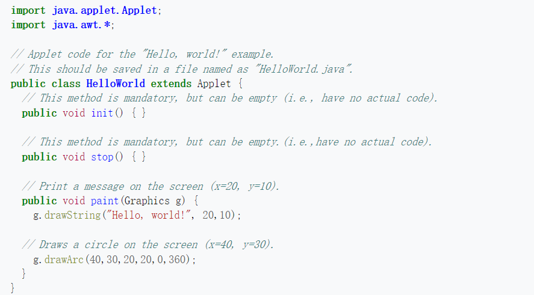
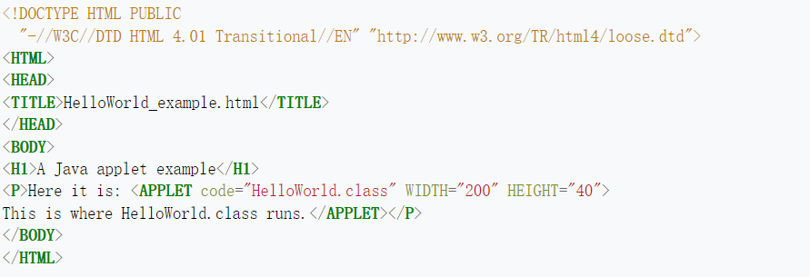

Video Introduction
Before we dive into the history of Code on Demand, let's review its concept with a video.
Relevant Web Technology Example And Development
Step1:
Java applets
1995
Since the tag ‹applet› has no longer supported Html5, so here I use a video to show how it works in html.
An applet is a small application that supports and enhances the hosting web application. Commonly created using the Java programming language, applets run within a web browser. Applets can either be small enhancing programs or stand alone as complete applications in themselves, since they have access to the complete Java application program interface (API).Applets are usually embedded within the syntax of the hosting web page, which loads on request by the user. Hypertext Markup Language (HTML) code is received by the web browser and translated into dynamic, graphical, and informative pages we see displayed on our devices. Web pages that contain dynamic content such as animation and sound effects, making the user's experience more interesting, are the result of these small programs called applets.
Here is another example of applet in Html from 'Wikipedia'. The first picture shows the code of a java applet that can display "Hello World".
The above code is compiled as "HelloWorld.class" that can be used by the following html file.
Why Java Applet is dead?
- Java applets would depend on a Java Runtime Environment (JRE), a complex and heavy-weight software package.
- Mobile browsers on iOS or Android, never run Java applets at all
- There was no standard to make the content of applets available to screen readers.
- As with any client-side scripting, security restrictions made it difficult or even impossible for some untrusted applets to achieve their desired goals.
- Alternative technologies exist (for example, WebAssembly[33] and JavaScript) that satisfy all or more of the scope of what was possible with an applet.
Step2:
JavaScript
1995
Javascript loads executable code from a remote server upon the request of the client. In this case, the anime.js code is loaded from a remote server at the request of the page to animate it. When the battery label reaches 100%, the animation stops automatically
JavaScript is a kind of high-level scripting language belonging to the network. It has been widely used in the development of Web applications and it is often used to add various dynamic functions to Web pages and provide users with more smooth and beautiful effects. JavaScript scripts are often embedded in HTML to achieve their own functionality
Operational mode:- It is an interpreted scripting language (code is not precompiled)
- It is used to add interactive behavior to HTML (standard Common Markup Language) pages.
- It can be embedded directly into an HTML page, but written as a separate JS file facilitates the separation of structure and behavior
- Cross-platform features that with the support of most browsers, it can run on multiple platforms (Windows, Linux, Mac, Android, iOS, etc.)
- JavaScript like other script languages, has its own basic data types, expressions and arithmetic operators, and basic programming frameworks for programs
Step3:
Adobe Flash Player
2005
What is Adobe Flash Player
Adobe Flash Player (known in Internet Explorer, Firefox, and Google Chrome as Shockwave Flash)[10] is freeware computer software for viewing multimedia contents, executing rich Internet applications, and streaming audio and video content created on the Adobe Flash platform. It can run from a web browser as a browser plug-in or independently on supported devices.
It becomes unavailable because of its accessibility and usability, privacy, security, vendor lock-in and so on
How COD is implemented?
Adobe Flash Player can be developed in the ActionScript language, which generates a swf file whose code can be called remotely by js.
Step4:
WebAssembly
2017
How COD is implemented?
WebAssembly works by compiling static languages such as C,C++, and Rust into wasm binary files that can be run by the browser. When the browser loads the wasm file, it compiles it into native code and runs it.
The pros of WebAssembly
- Efficient and fast
- Safe
- Open and debuggable
- Part of the open web platform